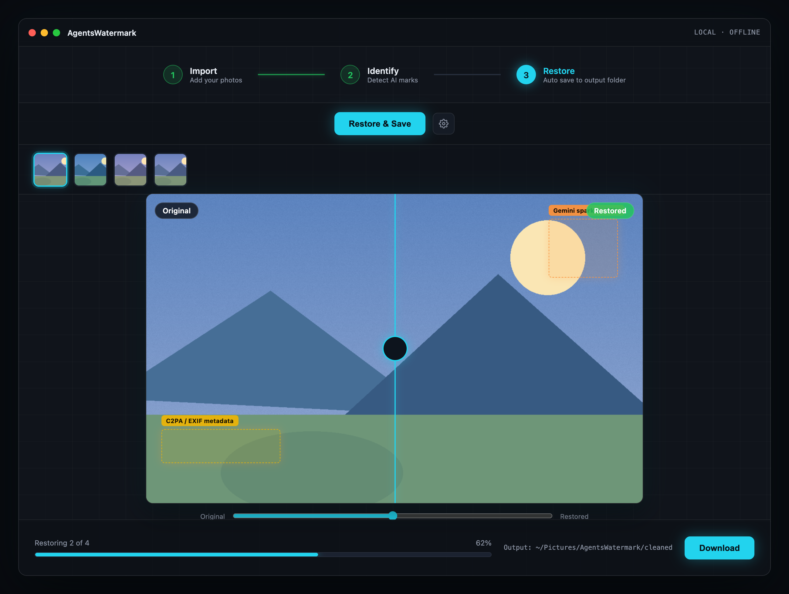
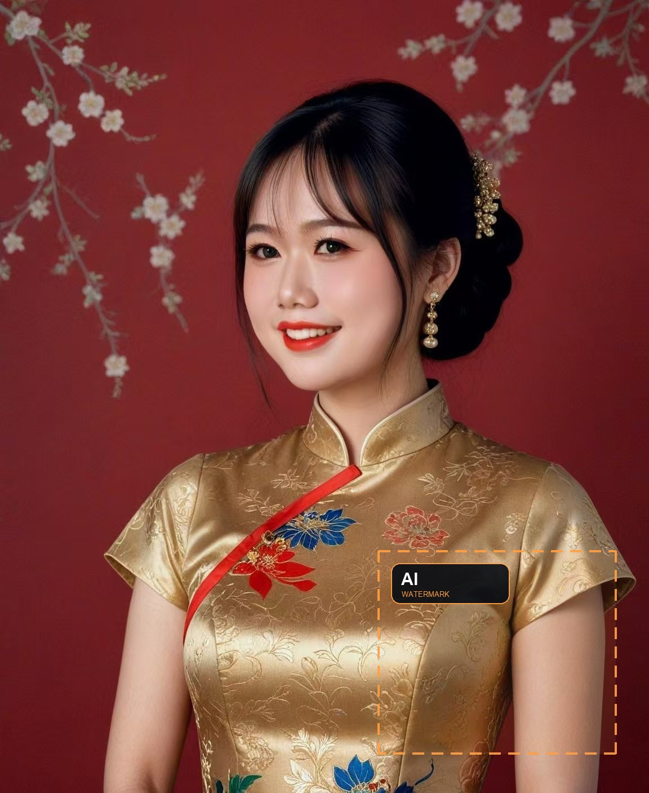

Watermark Factory
Identify and restore watermarked images from 30+ AI platforms and common sources. 100% local, offline, batch ready on macOS.
Download for macOS
V1.0.2 · macOS 13+ · Free

Three simple steps
Import, identify, restore. No configuration needed.
1
Import
Drag images or a folder into the app.
2
Identify
Detect the AI agent and visible watermark locations.
3
Restore
Restore locally and save to your output folder.
See it in action
Before and after, processed 100% on your Mac.
Before

After
Supported sources
11 visible marks plus 30+ metadata sources.
GeminiDoubaoJimengQwenKling
YuanbaoSamsungRunningHubBaiduLibLibAI
OpenAIAdobe FireflyMicrosoftFLUXMidjourney
FAQ
Does it upload my photos?
No. Everything runs locally on your Mac.
Is it free?
V1.0.2 is free. Advanced backends come later.
Can it remove stock watermarks?
No. It only supports content you own.
How do I update?
Download the new DMG and replace the app.